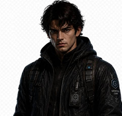
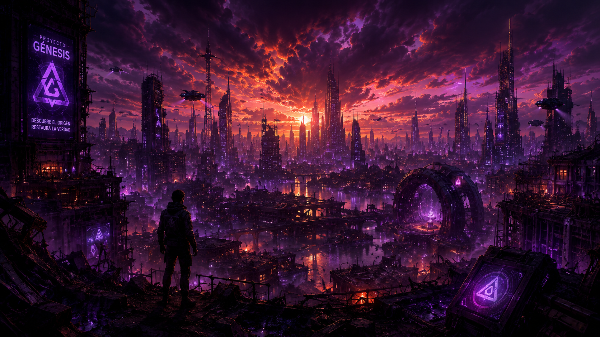
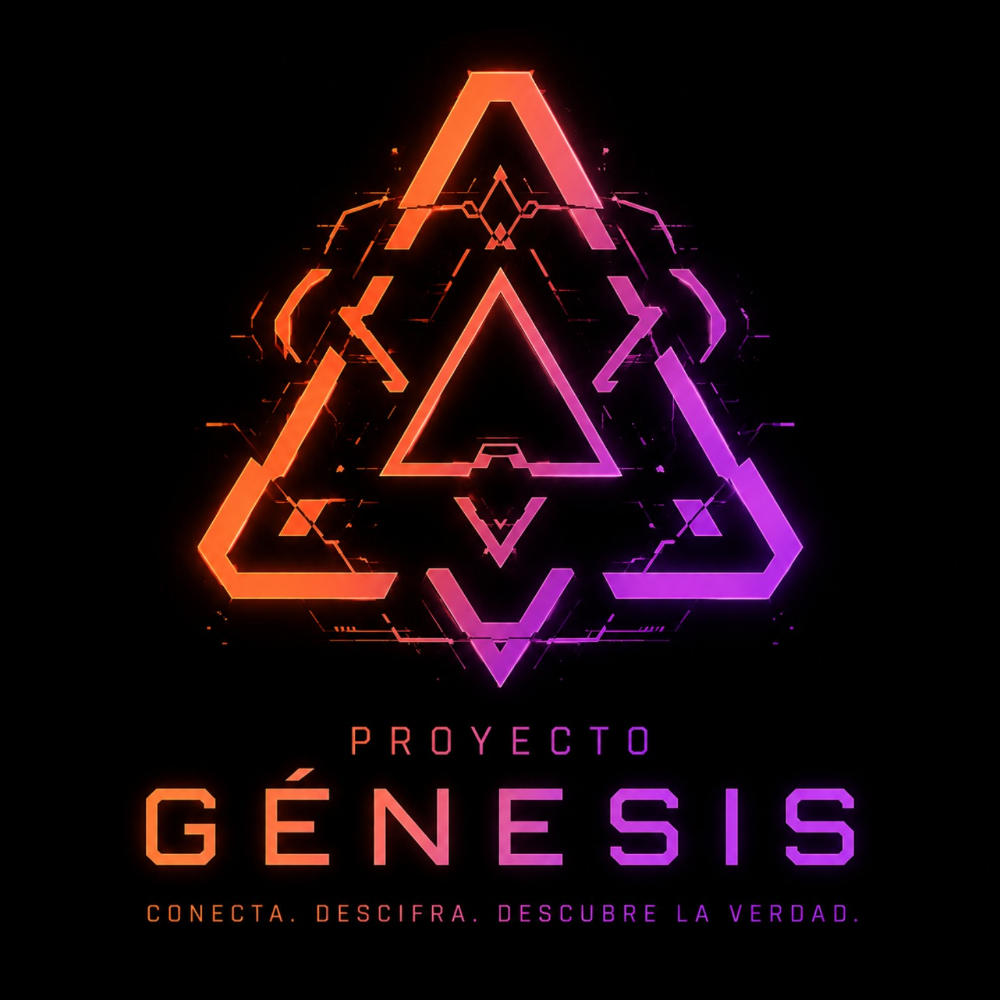
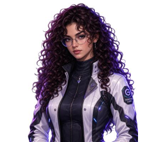
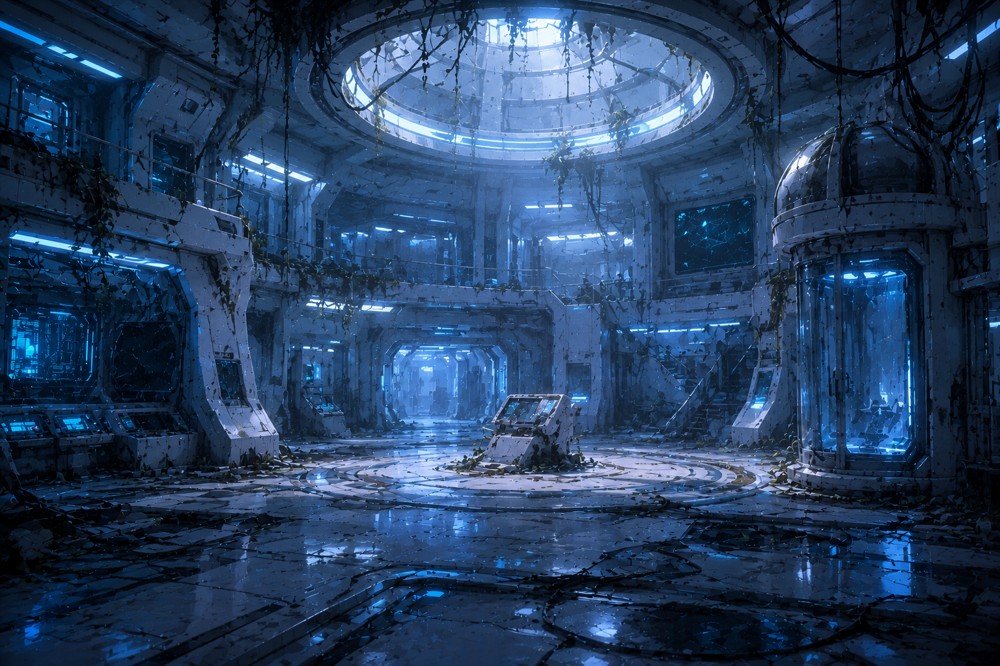

GV-01PROTAGONISTA
Elian Voss
Explorador de sistemas y antiguo técnico de Génesis. Puede leer los patrones que otros consideran ruido.
INTEGRIDAD
La ciudad cayó. La señal sigue viva. Entra al archivo de Proyecto Génesis, resuelve los sistemas que quedaron atrás y decide qué merece sobrevivir.


En 2087, la corporación Génesis prometió una nueva era para una humanidad agotada. Cuando el núcleo central dejó de responder, la ciudad se convirtió en un laberinto de ruinas, terminales apagadas y memorias incompletas.
Ahora una transmisión imposible atraviesa los sectores abandonados. Tú eres Elian Voss, un explorador de sistemas con una pregunta: ¿la caída fue un accidente o alguien escribió el final antes de tiempo?
Conecta. Descifra. Descubre la verdad.
— Fragmento recuperado del protocolo GénesisEl Proyecto Génesis es una red de restauración diseñada para reiniciar las ciudades tras el colapso. Cada misión recupera una pieza del protocolo: servidores, memoria, color y energía.
La Corporación Génesis controla la infraestructura que queda. Los Restantes protegen las ruinas y una señal desconocida guía a quienes aún buscan respuestas.
Una frecuencia desconocida se sincroniza con el núcleo de Génesis.
El sistema central corta todas las comunicaciones y borra los registros públicos.
La transmisión vuelve a emitir coordenadas. Cada respuesta abre una puerta.
Observa la introducción antes de entrar. El video contiene las coordenadas del primer punto de acceso.

GV-01Explorador de sistemas y antiguo técnico de Génesis. Puede leer los patrones que otros consideran ruido.

SV-02Analista de señales con memoria fotográfica. Su canal es la única conexión estable con el núcleo.
Recupera la memoria del servidor que mantiene en pie los accesos de la ciudad. Tendrás que ensamblar una red antes de que el sistema se bloquee.
Las terminales responden a una secuencia de color que alguien dejó oculta en los edificios del sector B.
Enciende los interruptores y decide si el protocolo debe reiniciarse o permanecer dormido.

Ejecutable para Windows 10/11. Descarga el archivo, descomprímelo y abre ProyectoGenesis.exe.
Aplicación para macOS Intel y Apple Silicon. Abre el paquete desde Finder y autoriza la app si Gatekeeper lo solicita.
Los enlaces se activan cuando los builds están publicados en web/downloads. En macOS, si el sistema bloquea la app, usa clic derecho → Abrir la primera vez.
No. La campaña se instala localmente; solo necesitas internet para descargar el build.
Sí. La lectura de la señal cambia según los archivos que decidas restaurar en el núcleo.
Usa el correo de contacto al final de esta página e indica tu sistema operativo y misión.